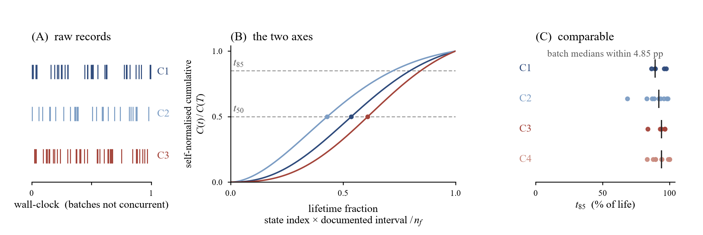

PROTOCOL两条轴
NO RETRAINING

lifetime fraction
= state index × documented interval / nf
SNHIx
= lifetime fraction at which the self-normalised cumulative curve reaches x% of its final value
- 横向：采集文档里的间隔和失效循环数，不看墙钟时间。
- 纵向：累积曲线除以自身终值，不用绝对阈值。
- 边界：SNHI 是完成记录后的离线描述量；前向报警是另一层。
POSITIONAE t85 · 29 specimens
每个点是一个试件；横线是批内中位。AE：4 批 29 组；GW：3 批 17 组。
VARIANCE SHAREη² · 机构解释了多少
campaign（4 批）
university（2 校）
0.000 / 0.057：AE 在 x=50 / x=85 的校间方差占比。虚线是 permutation 零中位；p 为对应尾概率。
η² = 组间平方和 / 总平方和；组规模固定，20,000 次置换。
BASELINES为什么不是普通归一化
| 规则 | 归一化 | 给出位置 | 批间 pp | 批内 pp |
|---|
同一 15 个 C3/C4 试件；批间/批内为寿命分数极差（pp）。SNHI 行高亮。
SENSITIVITYbin 宽度
| bin (cycle) | 批间 pp | 批内 pp | 中位 |Δ| | 最大 |Δ|* |
|---|
* 去掉 1400 / 4500 cycle 两个短记录；15 个 C3/C4 试件。